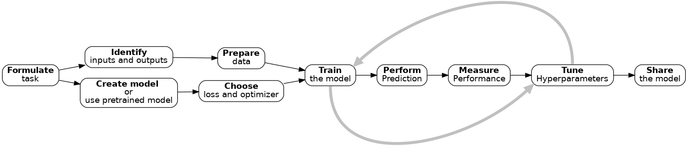

Lesson 05: Introduction Deep Learning¶
All content is taken from here.
This material revolves mostly around the capabilities and inabilities of Deep Learning.
What is AI?¶

No More Feature Engineering¶

The Deep Learning Workflow¶
Exercises¶
Exercise 1
Which of the following would you apply Deep Learning to?
Recognising whether or not a picture contains a bird.
Calculating the median and interquartile range of a dataset.
Identifying MRI images of a rare disease when only one or two example images available for training.
Identifying people in pictures after being trained only on cats and dogs.
Translating English into French.
Exercise 2
Think about a problem you’d like to use Deep Learning to solve.
What do you want a Deep Learning system to be able to tell you?
What data inputs and outputs will you have?
Do you think you’ll need to train the network or will a pre-trained network be suitable?
What data do you have to train with? What preparation will your data need? Consider both the data you are going to predict/classify from and the data you’ll use to train the network.
Discuss your answers with the group or the person next to you.